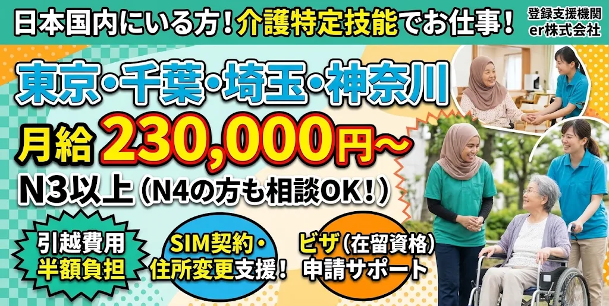

東京・首都圏をはじめ全国の求人をご紹介。
株式会社erが「引越・SIM契約・ビザ手続き」をすべて支援します！

※気になることの質問だけでもOK！あなたの希望に合うお仕事を探します
あなたの資格・経験・希望に合わせてぴったりのお仕事をご案内します。
月給23万円〜・手当充実
食品加工・機械オペレーターなど
レストラン・調理補助・接客
フロント・客室管理など
地方からの引っ越しやビザの変更も安心です。
地方から首都圏へ移動する費用を会社が50%サポート。手元の初期費用が少なくても安心して新生活を始められます。
日本でのスマホ契約（格安SIM）や市役所での住所変更など、分からないことはスタッフが一緒にお手伝いします。
登録支援機関の株式会社erが、特定技能ビザへの切り替え手続きや必要書類をすべて丁寧にフォローします。
実際の募集案件や施設のお仕事PR動画です。左右スワイプで再生できます 👉
※タップして音声をONにできます
介護職（特定技能）、製造、飲食、宿泊など
月給 230,000円〜（介護職例）
※職種・勤務地・経験によって異なります
日本国内に在留している外国人の方
東京・千葉・埼玉・神奈川（首都圏）ほか全国
外国人材（特定技能・技能実習修了者）の採用や受け入れ、登録支援機関としてのサポートをご検討されている企業様からのご連絡も心よりお待ちしております。
求人票のご相談や面談の設定など、迅速に対応いたします。
お問い合わせ方法
下記のフォームより、【応募備考欄（Notes）】に「企業名」「ご担当者様名」「採用検討の旨」をご記入の上、ご送信ください。担当者より折り返しご連絡いたします。
転職の時期や希望給与、住みたい場所など、何でもお気軽にご相談ください。株式会社erがすべて無料でサポートします！